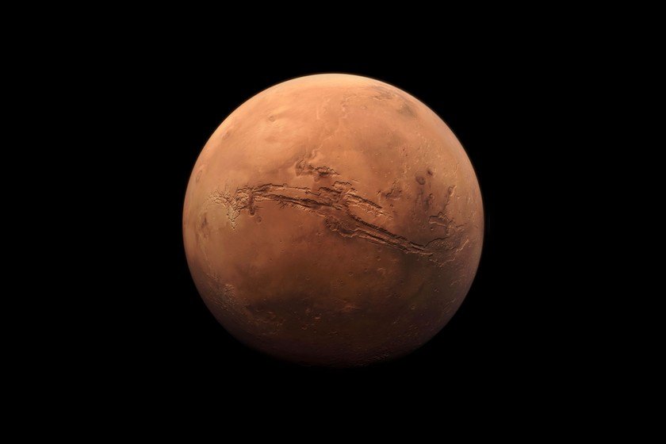
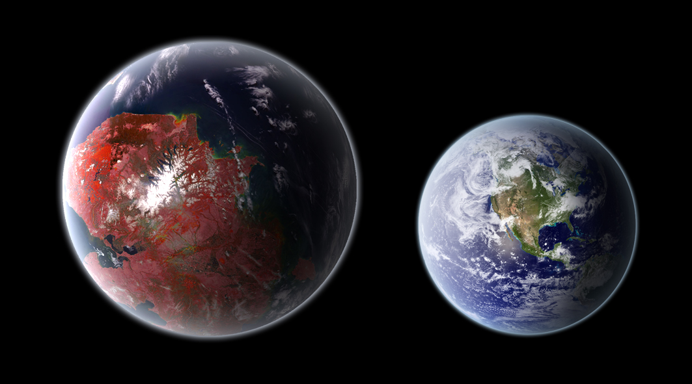

Módulos de control (Si dejan de Girar, algo malo sucedió)
Mundos lejanos similares a la tierra
| Denominación | Nombre | Ubicación actual | Viable o inviable | Anotaciones adicionales |
|---|---|---|---|---|
| Sujeto 1 | Marte | 225 millones de kilómetros | Viable | Temperatura de de -153°C a 20°C y una atmosfera debil |
| Sujeto 2 | Venus | 261 000 000 de kilómetros | Inviable | Temperatura de 460 °C a 470 °C |
| Sujeto 3 | 55 Cancri E | 40 años luz de distancia | Inviable | Temperatura de 2000 °C con oceanos de lava |
| Sujeto 4 | Trappist 1e | 40 años luz de distancia | Inviable | Temp. Aprox. -48°C a -27°C |
| Sujeto 5 | Kepler-442b | 1.200 años luz de distancia | Inviable | Temperatura de −40 °C o −40 °F |


Observaciones Generales de los exoplanetas
Marte es el unico mundo viable para la visita de la humanidad en un futuro algo lejano
Posee un ciclo de días marcado en 24.6 horas, estaciones,
agua congelada y un potencial de recursos (como el oxígeno y multiples combustibles como el Metano y Azufre)
La atmósfera es extremadamente fina y bastante fría (llegando incluso hasta los -143 Grados celcius)
Notas Adicionales
Un viaje entre la Tierra y Marte tardaría entre 4 y 12 meses, dependiendo de la posición de ambos planetas en sus órbitas, así que si algo sale mal,
estarías prácticamente solo. Incluso una señal de radio puede tardar hasta 20 minutos en llegar.